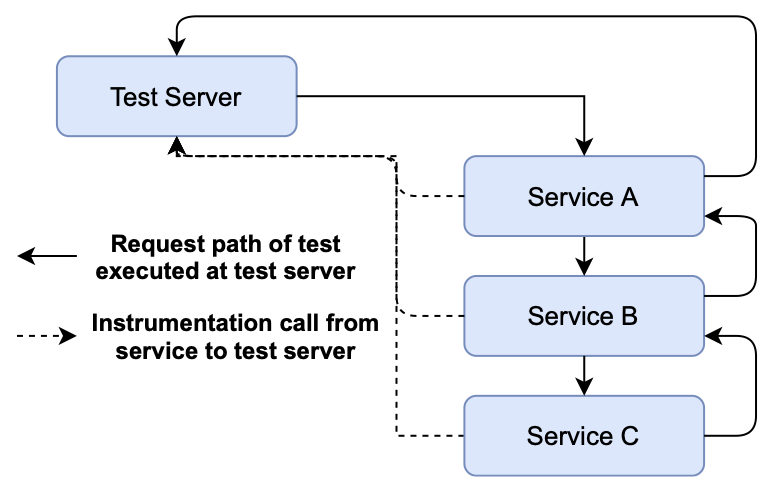
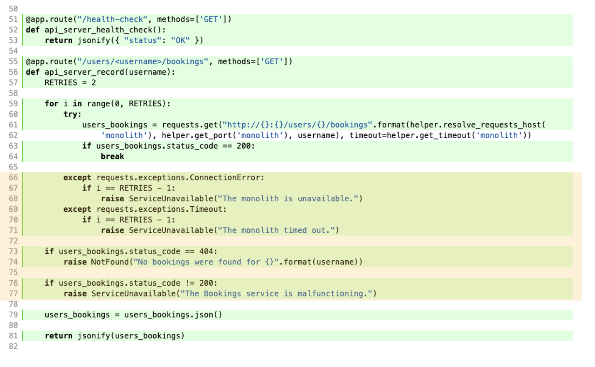

What is SFIT?
In this post, we will discuss our technique for identifying resilience bugs in microservice applications, called Service-level Fault Injection Testing (SFIT). SFIT takes a developer-first approach, integrating fault injection testing into the development process as early as possible without requiring developers to write specifications in a dedicated formal language. This decision is key, as it seamlessly integrates our approach into developers’ existing development environments and toolchains.
We specifically target the types of resilience issues that are able to be identified during development, in the local development environment, with traditional mocking techniques. As far as a methodology for fault injection, we build on observations made by systems as early as Ferrari (1995): lower-level faults – from hardware faults to operating system faults – can be tested in the application layer by triggering the coorresponding application-level manifestation of that fault. As far as implementation is concerned, we follow in the path of systems like LFI (2009) and AFEX (2012) focusing on library-level fault injection through method or function interposition.
The architecture of Filibuster, the prototype implementation of SFIT, is shown below. In this architectural diagram, we see an example where Service A talks to B, and B talks to C before returning a response back to the caller. At each step of communication, interposition placed at Service A, B, and C’s server and client libraries communicates with a centralized testing server in order to know when remote calls are made, where they are terminated, what they return, and whether or not to inject a fault.
Core Observations
SFIT builds on three key observations we made about how microservice applications are being developed today:
Microservices developed in isolation. Microservice architectures are typically adopted when teams need to facilitate rapid growth, thereby breaking the team into smaller groups that develop individual services that adhere to a contract. This contract typically requires that two or more teams meet and agree to an API between the services that they manage. Therefore, individual team members typically do not understand the state or internals of services outside of their control well enough to write a detailed specification of the application to automatically verify it with a model checker.
Mocking could prevent failures. Based on our corpus construction, all of the bugs that we reimplemented and identified using Filibuster could have been detected earlier if the developers had written mocks that simulated the failure or malfunctioning of the remote service in a testing environment. We cannot speak to why these tests were not written, but we assume that this might be the case for two reasons; (i) writing tests with mocks is a time consuming process with minimal apparent benefit to the developer as the failure case may be rare, or (ii) the failure case is not known to the developer at the time of development. Note: Filibuster does not target byzantine or other data corruption failures (e.g., malformed responses, incorrect responses) but targets service timeouts, service unavailabilities, and known standardized responses indicating service failure (e.g., GRPC error codes such as `DEADLINE_EXCEEDED` and `FAILED_PRECONDITION`, HTTP 4XX-5XX response codes and bodies.)
Functional tests are the gold standard. In lieu of writing specifications, developers write multiple end-to-end functional tests that verify application behavior. Therefore, developers already believe that the investment in end-to-end testing is worthwhile, and we believe any successful fault injection approach should start there.
As we will show, SFIT, as a technique, exploits these three key observations.
Approach
Let’s look at how SFIT, starting from a single passing fault-free functional test, can be used to generate the additional tests needed to ensure resilience.
For simplicity of presentation, we make two assumptions: services communicate over HTTP, which is not a limiting factor of our design as our prototype already supports GRPC-based services, and that a single functional test exercises all application behavior. In practice, applications will have an entire suite of functional tests to cover all application behavior and SFIT will leverage all of them.
SFIT starts with a passing end-to-end functional test written by the application developer that exercises some behavior under some fault-free scenario and asserts the correct outcome. We assume that this test is already passing, is nondeterministic, and all logical errors have been ruled out – with the exception of logical errors contained in failure handling code that is not currently being exercised by this test.
SFIT starts by executing this initial fault-free execution, and at each point
where we reach a location where remote communication occurs to another service,
an additional test execution is scheduled for each way that the calling
service’s communication library can fail: if you’re familiar with a system like
SAGE (2008),
this will sound similiar to the mechanism SAGE uses to schedule all possible
alternative executions based on negating all conjuncts of the current path
condition. For example, if Service A goes to communicate with Service B, and we
know the library that Service A uses to communicate with Service B can raise a
ConnectionError or Timeout, we know that we need to execute the test two
more times: one to explore what happens when that call throws each of the two
possible exceptions. This results in a depth-first search of the fault space,
starting from the root service.
In order to reset the state in between each test execution, we either provide SFIT with a script that can be used to reset service state – through some sort of soft-restart – or SFIT will restart the services in between each test execution.
Audible Example
For a more detailed example, consider the reproduction of part of the Audible
service taken from our survey. We’ll assume for now that the calling library
can only throw two possible errors: a ConnectionError for all services and a
Timeout where a timeout has been specified at the callsite.
In this example, the request from our functional test originates at the Audible App. The first request issued is to the Content Delivery Engine which can fail with a Timeout or ConnectionError. We add two executions on the stack of executions to explore and continue executing the test.
Next, we reach the Content Delivery Service and schedule the two executions where Content Delivery Engine was successful and the call to Content Delivery Service fails. This is performed for the entirety of the initial request. As we execute all tests in the stack, we may reveal new paths by triggering failures. For example, failure of the Content Delivery Engine could cause an additional path to be exposed to a logging service. We continue to explore until all paths have been fully explored.
In this example, several services have multiple dependencies; for example, the Audible Download Service talks to the Ownership service, the Activation service, and the Stats service. In this case, we have to schedule executions that cover the entire space of failures — all of the ways each service can fail independently with all of the combinations of how they can fail with one another.
As the developer runs these generated tests, they will have to adapt their functional test accordingly to consider failure. To do this, we provide a helper module that allows the developer to write conditional assertions for the executions where a failure is present.
Fault Injection
Our approach relies on the ability to inject failures for remote calls and therefore it is essential that we can instrument the library used for making remote calls to alter their response. This ability to interpose on remote calls is already rather commonplace: many popular telemetry systems (e.g., opentelemetry, opentracing) already provide libraries that automatically wrap calls to common libraries used for remote communication (e.g., HTTP, gRPC) in order to assist developers in understanding application performance by sending telemetry information to a remote telemetry service (e.g., jaeger).
We leverage this instrumentation design for fault injection: instead of returning the actual response from the remote service, we return a failure response instead based on the fault that was injected. This instrumentation communicates with a server process that aggregates information collected by the instrumentation in order to determine the next test to run.
Fault Identification
Our approach injects faults that represent the failures that can occur for a given service. This relies on knowing two different types of failures:
Failures originating at the call site. We have to consider faults that can originate at the call site. For example, when using the requests library in Python for performing HTTP requests, there are 23 exceptions that the library can raise when performing a request. To address this concern, we can either specify the module containing the exceptions or specify them manually in configuration. For this post, we will only consider the two most common: Timeout and ConnectionError. _Note: In the case of Timeout, Filibuster can optionally wait the timeout period (or, just short of, or just past) before returning the exception or not in order to identify failures from cascading timeouts. Any and all of these combinations can be tested by the application developer._
Failures originating at the remote service. A service might handle a failure of one of its dependencies and return a failure. For example, if a service that is a dependency of another service throws a Timeout exception, it may be caught and a 500 returned. We use a static analysis on the service’s source code to over-approximate the responses that the service can return: in Flask, this is possible using looking for return or raise statements.
Dynamic Binding
One of the difficulties with HTTP is that requests made between different services use a URL provided as a string. This string may not be a unique identifier of the actual service that is being contacted, as these URLs may use IP addresses or unrelated DNS names.
To solve this, we use additional instrumentation to record the service that is actually reached when a call is made. This instrumentation, instead of being used on the caller’s library used for remote communication, is placed on the web framework that receives the request. Therefore, the instrumentation can record the callee’s service name before the request is processed by the application code. Similar to the instrumentation that we use on the caller’s side, we leverage the same design as the common telemetry systems (e.g., opentelemetry) take and transmit this information to the server to determine the next test to execute.
When one of these instrumentation calls is received by the server to identify the target of a remote call, any service-specific failures (e.g., GRPC FAILED_PRECONDITION, HTTP 404 Not Found) are also then scheduled as additional test executions. SFIT cannot schedule these errors until it knows the target of the remote call – i.e., dynamic binding has been resolved at runtime after the call has been issued.
Test Adaptation
As developers will be starting with a functional test that assumes no failures, developers will need to update their functional test to contain proper test oracles for the cases where dependent components fail.
To do this, we provide a helper module for writing conditional assertions. This helper lets the developer write a conditional statement such as if a fault was injected on Service A and place appropriate assertions on what the behavior of the system should be under failure. Developers will add these conditional assertions into the existing functional test. We do not believe this to be an intrusive process, as the manual approach (using mocks) would require test duplication, each with custom assertions. For a similar reason, we avoid static test generation and favor a dynamic approach where large numbers of tests do not need to be consistently regenerated during software development.
We imagine a typical workflow as the following. Developers start with a passing functional test and SFIT begins injecting faults. As faults are injected, the functional test will fail with assertion errors. Using the helper, developers will write an conditional assertion to capture desired failure behavior. An example of one such assertion for the Audible application might say __if a fault was injected on the stats service, the service should still play the audiobook.__ From there, the developer can use the counterexample to replay the previous failing test to validate these newly added assertions.
Improved Coverage
Finally, at the end of execution, SFIT aggregates coverage reports across all executions that were generated by the tool in order to produce a coverage report.
The following is a coverage report for a small cinema application we adapted from a microservice tutorial written by RedHat. The functional test we started with only exercised the golden path: all services reponded without failure. SFIT was able to close the gap and generate the tests for all possible failure paths; we highlight the automatically generated coverage in yellow.
Conclusion
In this post, we provided an overview of our new fault injection technique for improving resilience of microservice applications named Service-level Fault Injection Testing. After reading this, you might be left with a few questions, for instance: